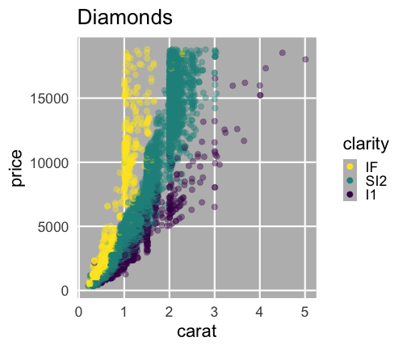
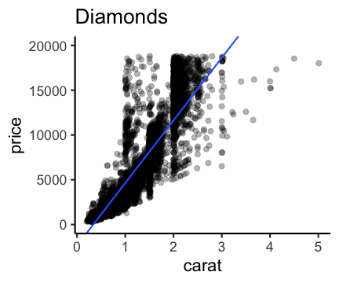

統計モデリング概論 DSHC 2021
東北大学 生命科学研究科 進化ゲノミクス分野 特任助教
(Graduate School of Life Sciences, Tohoku University)
(Graduate School of Life Sciences, Tohoku University)
2021-06-30 東京海上 Data Science Hill Climb
https://heavywatal.github.io/slides/tokiomarine2021/
データを使ってやりたいこと
- 現象を理解したい
- 将来を予測したい
- ものを分類・判別したい
- 挙動を制御したい
- 新しい何かを生成したい
データ解析って必要？ 生データ見ればいいべ？
往々にして複雑過ぎ、情報多すぎ、そのままでは手に負えない
print(ggplot2::diamonds)
carat cut color clarity depth table price x y z
<dbl> <ord> <ord> <ord> <dbl> <dbl> <int> <dbl> <dbl> <dbl>
1 0.23 Ideal E SI2 61.5 55 326 3.95 3.98 2.43
2 0.21 Premium E SI1 59.8 61 326 3.89 3.84 2.31
3 0.23 Good E VS1 56.9 65 327 4.05 4.07 2.31
4 0.29 Premium I VS2 62.4 58 334 4.20 4.23 2.63
--
53937 0.72 Good D SI1 63.1 55 2757 5.69 5.75 3.61
53938 0.70 Very Good D SI1 62.8 60 2757 5.66 5.68 3.56
53939 0.86 Premium H SI2 61.0 58 2757 6.15 6.12 3.74
53940 0.75 Ideal D SI2 62.2 55 2757 5.83 5.87 3.64
ダイヤモンド53,940個について10項目の値を持つデータセット
要約統計量を見てみよう
各列の平均とか標準偏差とか:
stat carat depth table price x y z
<chr> <dbl> <dbl> <dbl> <dbl> <dbl> <dbl> <dbl>
1 mean 0.80 61.75 57.46 3932.80 5.73 5.73 3.54
2 sd 0.47 1.43 2.23 3989.44 1.12 1.14 0.71
3 max 5.01 79.00 95.00 18823.00 10.74 58.90 31.80
大きさ carat と価格 price の相関係数は 0.92 (かなり高い)。
生のままよりは把握しやすいかも。
しかし要注意…
平均値ばかり見て可視化を怠ると構造を見逃す


データ可視化は理解の第一歩
情報をうまく絞って整理 → 直感的にわかる

carat が大きいほど price も高いらしい。
その度合いは clarity によって異なるらしい。
統計とは
データをうまくまとめ、それに基づいて推論するための手法。
- 記述統計: データそのものを要約する
- 要約統計量 (e.g., 平均、標準偏差、etc.)
- 作図、作表
- 推測統計: データの背後にある母集団・生成過程を考える
- 数理モデル
- 確率分布
- パラメータ(母数)
「グラフを眺めてなんとなく分かる」以上の分析にはモデルが必要
モデルとは
対象システムを単純化・理想化して扱いやすくしたもの
- Mathematical Model 数理モデル

- 数学的な方程式として記述されるもの。
- e.g., Lotka-Volterra eq., Hill eq.
- Computational Model 数値計算モデル

- 数値計算の手続きとして記述されるもの。
- e.g., Schelling’s Segregation Model, tumopp
- Concrete Model 具象モデル

- 具体的な事物で作られるもの。
- e.g., San Francisco Bay-Delta Model
データ科学における数理モデル
データ生成をうまく真似できそうな仮定の数式表現。

データ科学における数理モデル
データ生成をうまく真似できそうな仮定の数式表現。
e.g., $\text{price} = A \times \text{carat} + B + \epsilon$

新しく採れたダイヤモンドの価格予想とかにも使える。
もっと良い数式、もっといいパラメータ(A, Bなど)を探せそう。
モデリングにおける2つのアプローチ

どっちも知っておいて使い分けたい
| 項目 | 統計モデリング | 近年の機械学習 |
|---|---|---|
| モデル構造 | 単純化したい | 性能のためなら複雑化 |
| モデル解釈 | 主目的 | 難しい。重視しない |
| 予測・生成 | うまくすれば頑健 | 主目的。強力。高精度 |
| データ量 | 少なくてもそれなり | 大量に必要 |
| 計算量 | 場合による | 場合による |
| 例 | 一般化線形モデル 階層ベイズモデル |
ランダムフォレスト ニューラルネットワーク |
本講義の主題: 統計モデリング、特に回帰

回帰: 教師あり機械学習の一種とも言える
本講義の流れ

久保先生の"緑本"こと
「データ解析のための統計モデリング入門」
をベースに
- イントロ←いまここ
- 統計モデルの基本
- 確率変数・確率分布・パラメータ
- 尤度・最尤推定
- 一般化線形モデル、混合モデル
- ベイズ統計、階層ベイズモデル
参考文献
- データ解析のための統計モデリング入門 久保拓弥 2012
- 統計学を哲学する 大塚淳 2020
- データ解析のための数理モデル入門 江崎貴裕 2020
- 分析者のためのデータ解釈学入門 江崎貴裕 2020
- RとStanではじめる ベイズ統計モデリングによるデータ分析入門 馬場真哉 2019
- StanとRでベイズ統計モデリング 松浦健太郎 2016
- 科学とモデル—シミュレーションの哲学 入門 Michael Weisberg 2017
(原著: Simulation and Similarity 2013)